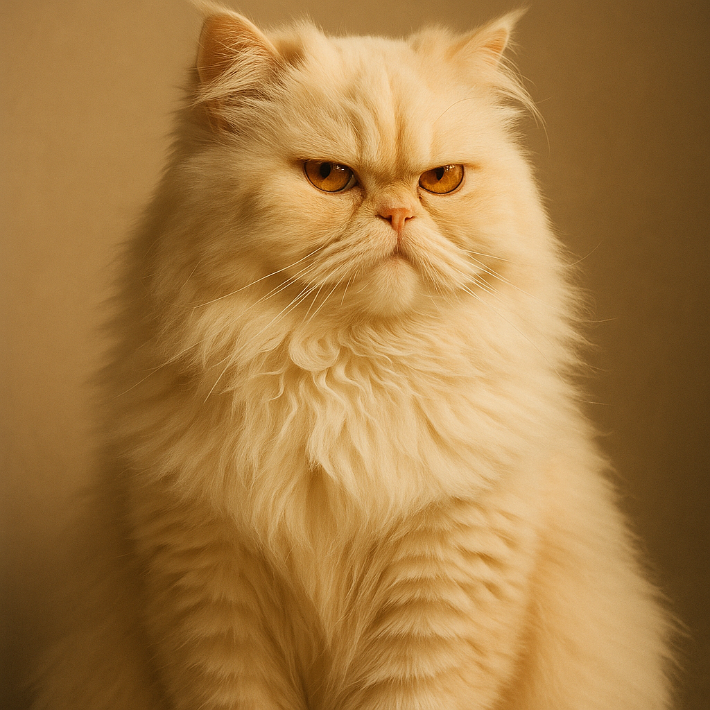

Test de 2 expressions universelles, chacune rendue 2× pour vérifier la consistance de Veo
Référence c2 (lock visuel)

Expression 1« Tu es sérieux ?? »
Render A · slot inacceptable-1
6s · 720p · ~$1.20
Render B · slot evidemment-1
6s · 720p · ~$1.20 · MÊME prompt
Expression 2« Je suis surpris et étonné »
Render A · slot inacceptable-2
6s · 720p · ~$1.20
Render B · slot evidemment-2
6s · 720p · ~$1.20 · MÊME prompt
3 critères de validation V2.1 :
Lisibilité — un viewer reconnaît-il l'émotion en moins d'une seconde ? Si tu dois "chercher" l'expression, c'est raté.
Consistance Veo — Render A vs Render B du même prompt : Madame est-elle reconnaissable des deux côtés ? L'expression est-elle similaire ? (si oui = Veo est fiable, on peut batch en confiance)
Distinction — "Tu es sérieux ??" et "Surpris/étonné" sont-elles VISUELLEMENT distinctes ? (si elles se ressemblent trop, on a un seul "wide-eyes face" générique = problème de palette d'expressions)